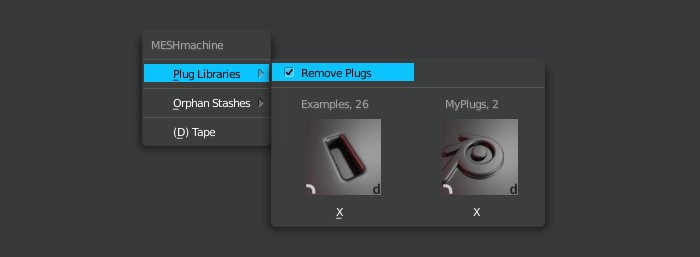

Remove Plugs
The Remove Plugs option, is used to remove individual plugs from a library and hard drive, directly from inside Blender.
Keep in mind
This completely deletes a plug and cannot be undone.
Using Remove Plugs

Enable the Remove Plugs checkbox in the Plug Libraries sub menu.
Then procceed to select a plug, as if you were to bring it into the scene.
A confirmation dialog will appear. You cann abort this via ESC or by clicking outside of it.
If you confirm by pressing OK, the plug will be deleted.
If you are done, uncheck the Remove Plug checkbox again.
Note
If you want to remove a larger number of plugs, a better way may be to do it directly in the file browser.
Navigate to the plug library and delete the matching plug blends and icons accordingly.